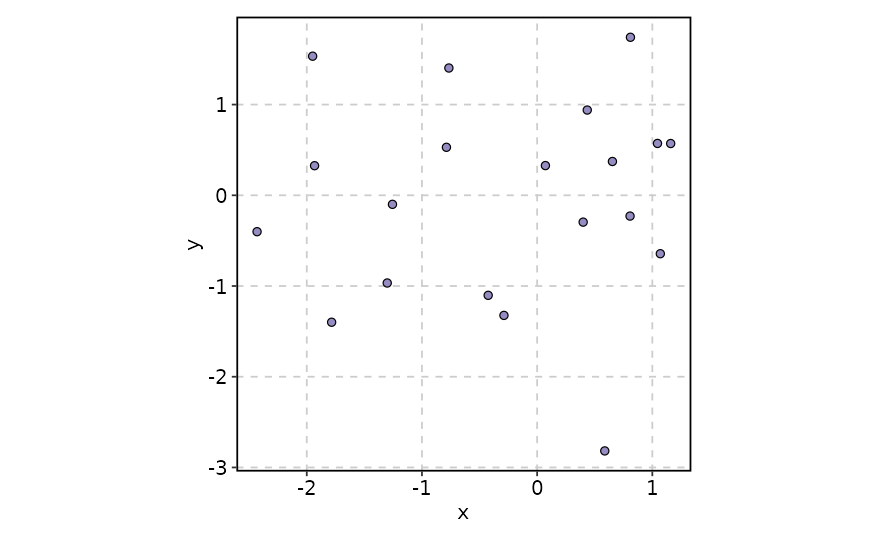
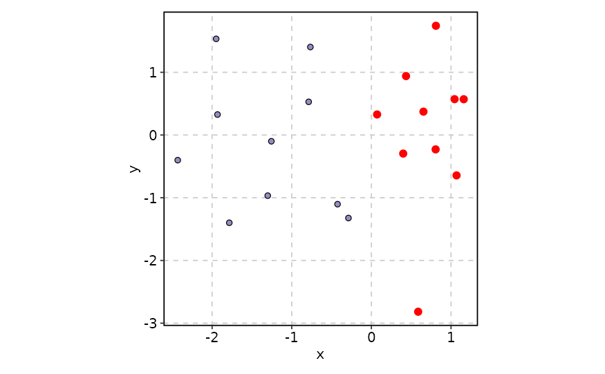
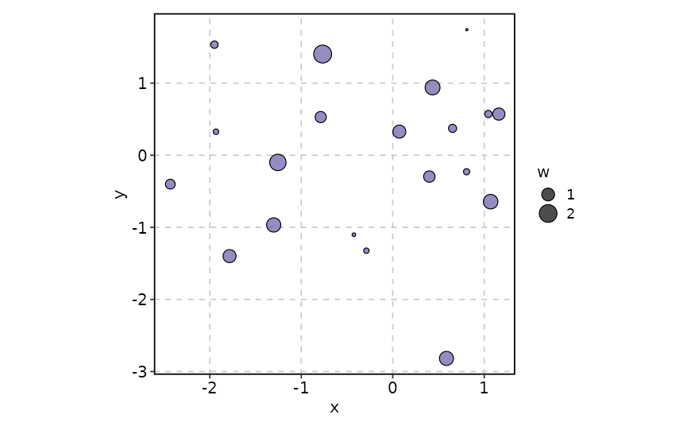
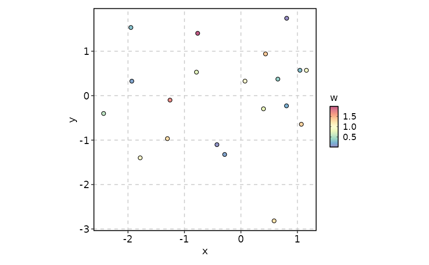
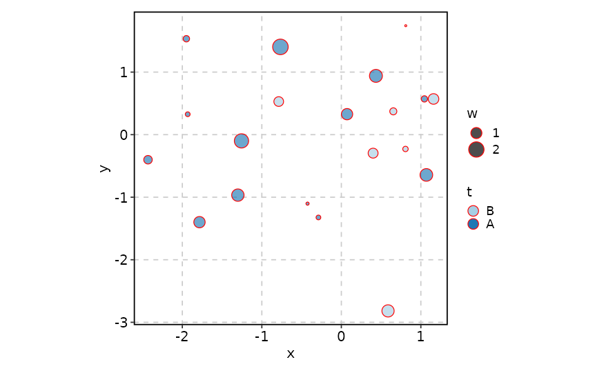
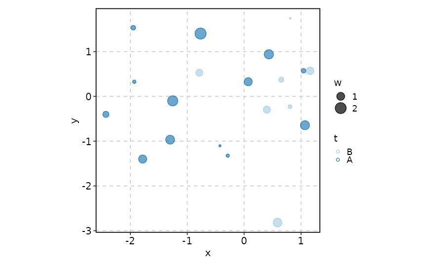
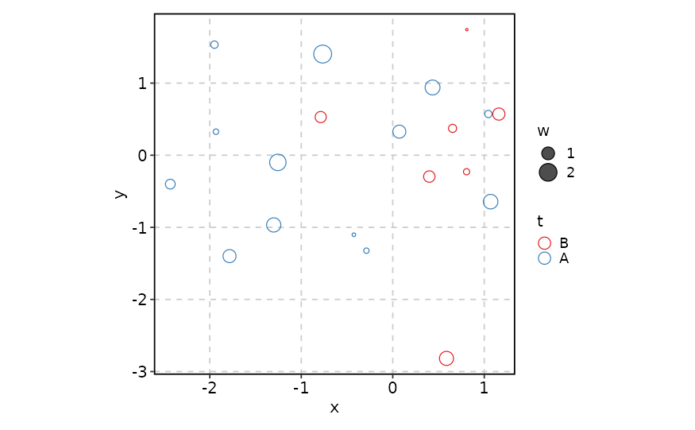
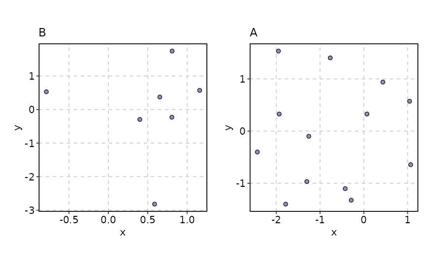
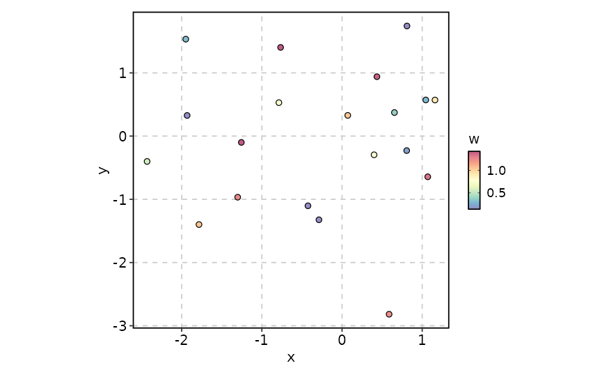
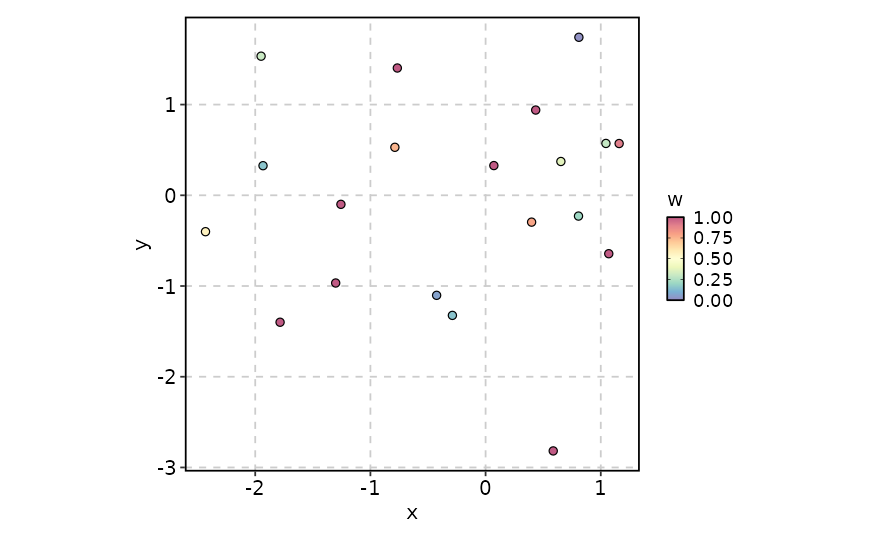

Draws a scatter plot with optional size encoding, colour encoding
(continuous gradient or discrete palette), point highlighting, and axis
transformations. This is the user-facing wrapper around
ScatterPlotAtomic that adds split_by support
(generating separate sub-plots per group) and combines them via
patchwork.
Key features:
Variable point size –
size_byaccepts either a numeric constant or a column name.Colour modes – numeric
color_byproduces a continuous gradient; factor/charactercolor_byproduces a discrete palette.Colour scale trimming –
lower_quantile/upper_quantile(or explicitlower_cutoff/upper_cutoff) trim/clamp continuous colour scale extremes.Border modes –
border_colorcan be a constant colour,TRUE(track the fill gradient), or omitted.Point highlighting –
highlightaccepts indices, rownames, logicalTRUE, or a string expression.Axis transformation –
xtrans/ytranssupport log, sqrt, and other scale transformations.Split sub-plots –
split_byproduces one scatter plot per group level, combined into a singlepatchworklayout.
Usage
ScatterPlot(
data,
x,
y,
size_by = 2,
size_name = NULL,
color_by = NULL,
color_name = NULL,
lower_quantile = 0,
upper_quantile = 0.99,
lower_cutoff = NULL,
upper_cutoff = NULL,
palreverse = FALSE,
split_by = NULL,
split_by_sep = "_",
shape = 21,
alpha = ifelse(shape %in% 21:25, 0.65, 1),
border_color = "black",
highlight = NULL,
highlight_shape = 16,
highlight_size = 3,
highlight_color = "red",
highlight_alpha = 1,
theme = "theme_this",
theme_args = list(),
palette = ifelse(!is.null(color_by) && !is.numeric(data[[color_by]]), "Paired",
"Spectral"),
palcolor = NULL,
facet_by = NULL,
facet_scales = "fixed",
facet_ncol = NULL,
facet_nrow = NULL,
facet_byrow = TRUE,
aspect.ratio = 1,
legend.position = "right",
legend.direction = "vertical",
title = NULL,
subtitle = NULL,
xlab = NULL,
ylab = NULL,
combine = TRUE,
nrow = NULL,
ncol = NULL,
byrow = TRUE,
seed = 8525,
axes = NULL,
axis_titles = axes,
guides = NULL,
design = NULL,
...
)Arguments
- data
A data frame.
- x
A character string specifying the column name of the data frame to plot for the x-axis.
- y
A character string specifying the column name of the data frame to plot for the y-axis.
- size_by
Either a numeric constant (uniform dot size) or a character string naming a numeric column whose values control dot size via
scale_size_area(max_size = 6). Default:2.- size_name
A character string for the size legend title. When
NULL(default), thesize_bycolumn name is used. Ignored whensize_byis a numeric constant.- color_by
A character string naming a column whose values control dot colour. Can be numeric (continuous gradient via
scale_fill_gradientn()/scale_color_gradientn()) or factor/character (discrete palette viascale_fill_manual()/scale_color_manual()). For shapes 21–25, the colour is applied to the fill aesthetic. WhenNULL(default), all dots are rendered in a single colour derived from the palette.- color_name
A character string for the colour legend title. When
NULL(default), thecolor_bycolumn name is used.- lower_quantile, upper_quantile
Lower and upper quantiles for the continuous color/fill scale. The actual cutoffs are determined by these quantiles when
lower_cutoffandupper_cutoffareNULL. Defaults:lower_quantile = 0,upper_quantile = 0.99.- lower_cutoff, upper_cutoff
Explicit lower and upper cutoffs for the continuous color/fill scale. When
NULL(the default), the cutoffs are determined bylower_quantileandupper_quantileviaquantile. Values outside the[lower_cutoff, upper_cutoff]range are clamped (winsorized) to the nearest cutoff value.- palreverse
A logical value indicating whether to reverse the palette. Default is FALSE.
- split_by
The column(s) to split data by and generate separate scatter plots for each level. The split column is processed before splitting; multiple columns are concatenated with
split_by_sep.- split_by_sep
A character string used to concatenate multiple
split_bycolumn values. Default:"_".- shape
A numeric value specifying the point shape. Default:
21(filled circle with border). Shapes 21–25 support separate fill and border colour aesthetics; all other shapes use a single colour aesthetic.- alpha
A numeric value specifying the transparency of the plot.
- border_color
Controls the point border colour. For shapes 21–25:
"black"(default) – constant black border.A colour string (e.g.
"red","#FF0000") – constant colour border.TRUE– border colour tracks thecolor_bygradient / palette viascale_color_gradientn()/scale_color_manual().
For shapes without a fill aesthetic (not 21–25), this parameter has no effect.
- highlight
Specifies which points to highlight with an overlaid
geom_point()layer. Accepted values:NULL(default) – no highlighting.TRUE– all points are highlighted.A numeric vector – row indices of points to highlight.
A single character string – an R expression (e.g.
"x > 0") that is parsed withrlang::parse_expr()and evaluated viafilter()to select rows.A character vector – rownames of points to highlight. An error is thrown if the data has no rownames.
- highlight_shape
A numeric value specifying the point shape for highlighted points. Default:
16(filled circle). Shapes 21–25 use thefillaesthetic; other shapes usecolor.- highlight_size
A numeric value specifying the size of highlighted points. Default:
3.- highlight_color
A character string specifying the colour of highlighted points. Default:
"red".- highlight_alpha
A numeric value in
[0, 1]specifying the transparency of highlighted points. Default:1.- theme
A character string or a theme class (i.e. ggplot2::theme_classic) specifying the theme to use. Default is "theme_this".
- theme_args
A list of arguments to pass to the theme function.
- palette
A character string specifying the palette to use. A named list or vector can be used to specify the palettes for different
split_byvalues.- palcolor
A character string specifying the color to use in the palette. A named list can be used to specify the colors for different
split_byvalues. If some values are missing, the values from the palette will be used (palcolor will be NULL for those values).- facet_by
A character string specifying the column name of the data frame to facet the plot. Otherwise, the data will be split by
split_byand generate multiple plots and combine them into one usingpatchwork::wrap_plots- facet_scales
Whether to scale the axes of facets. Default is "fixed" Other options are "free", "free_x", "free_y". See
ggplot2::facet_wrap- facet_ncol
A numeric value specifying the number of columns in the facet. When facet_by is a single column and facet_wrap is used.
- facet_nrow
A numeric value specifying the number of rows in the facet. When facet_by is a single column and facet_wrap is used.
- facet_byrow
A logical value indicating whether to fill the plots by row. Default is TRUE.
- aspect.ratio
A numeric value specifying the aspect ratio of the plot.
- legend.position
A character string specifying the position of the legend. if
waiver(), for single groups, the legend will be "none", otherwise "right".- legend.direction
A character string specifying the direction of the legend.
- title
A character string specifying the title of the plot. A function can be used to generate the title based on the default title. This is useful when split_by is used and the title needs to be dynamic.
- subtitle
A character string specifying the subtitle of the plot.
- xlab
A character string specifying the x-axis label.
- ylab
A character string specifying the y-axis label.
- combine
A logical value. If
TRUE(the default), the list of per-split plots is combined into a singlepatchworkobject viacombine_plots(). IfFALSE, returns the raw list ofggplotobjects.- nrow, ncol, byrow
Integers controlling the layout of combined plots via
combine_plots().byrow = TRUE(default) fills the layout row-wise.- seed
The random seed for reproducibility. Passed to
validate_common_args(). Default:8525.- axes, axis_titles
Strings controlling how axes and axis titles are handled across combined plots. Passed to
combine_plots(). See?patchwork::wrap_plotsfor options ("keep","collect","collect_x","collect_y").- guides
A string controlling guide collection across combined plots. Passed to
combine_plots().- design
A custom layout specification for combined plots. Passed to
combine_plots(). When specified,nrow,ncol, andbyroware ignored.- ...
Additional arguments.
Value
A ggplot object (single plot), a patchwork object
(when combine = TRUE with split_by), or a named list of
ggplot objects (when combine = FALSE), each with
height and width attributes in inches.
split_by Workflow
When split_by is provided:
Seed validation –
validate_common_args()sets the random seed for reproducibility.Theme resolution –
process_theme()resolves thethemestring or function.Split column resolution –
check_columns()validatessplit_by(force_factor, allow_multi, concat_multi).Data splitting – unused factor levels are dropped and the data is split into a named list (preserving factor level order). When
split_by = NULL, a single-element list named"..."is used.Per-split palette / colour –
check_palette()andcheck_palcolor()resolve per-split palette and colour overrides.Per-split legend –
check_legend()resolveslegend.positionandlegend.directionper split.Per-split title – when
titleis a function, it receives the default title (the split level name) and can return a custom string; otherwisetitle %||% split_levelis used.Dispatch – each split subset is passed to
ScatterPlotAtomic().Combination –
combine_plots()assembles the list of plots viapatchwork::wrap_plots, honouringnrow/ncol/byrow/design.
Examples
set.seed(8525)
data <- data.frame(
x = rnorm(20),
y = rnorm(20),
w = abs(rnorm(20)),
t = sample(c("A", "B"), 20, replace = TRUE)
)
# --- Basic scatter plot ---
ScatterPlot(data, x = "x", y = "y")

# --- Highlight points ---
ScatterPlot(data, x = "x", y = "y", highlight = 'x > 0')

# --- Size encoding (column name) ---
ScatterPlot(data, x = "x", y = "y", size_by = "w")

# --- Colour encoding (numeric gradient) ---
ScatterPlot(data, x = "x", y = "y", color_by = "w")

# --- Colour encoding (categorical) with border ---
ScatterPlot(data, x = "x", y = "y", size_by = "w", color_by = "t",
border_color = "red")

# --- Border colour tracks fill gradient ---
ScatterPlot(data, x = "x", y = "y", size_by = "w", color_by = "t",
border_color = TRUE)

# --- Shape without fill (single colour aesthetic) ---
ScatterPlot(data, x = "x", y = "y", size_by = "w", color_by = "t",
shape = 1, palette = "Set1")

# --- split_by with per-split palcolor ---
ScatterPlot(data, x = "x", y = "y", split_by = "t",
palcolor = list(A = "blue", B = "red"))

# --- Colour scale limits (quantile-based) ---
ScatterPlot(data, x = "x", y = "y", color_by = "w",
lower_quantile = 0.1, upper_quantile = 0.9)

# --- Colour scale limits (explicit cutoffs) ---
ScatterPlot(data, x = "x", y = "y", color_by = "w",
lower_cutoff = 0, upper_cutoff = 1)
